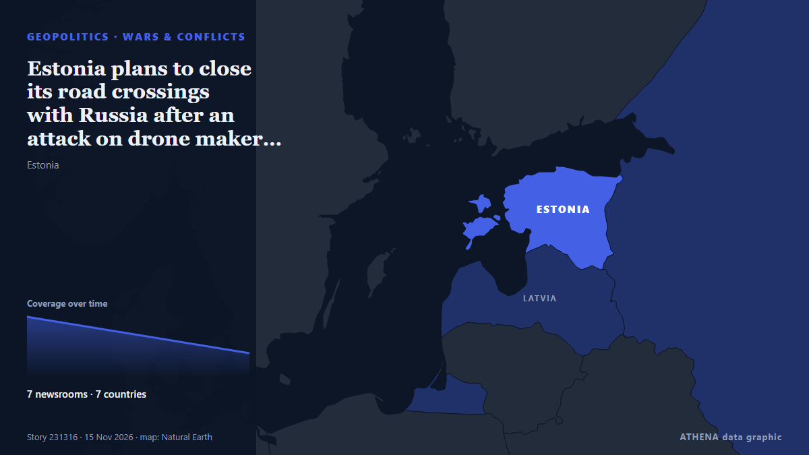

Géopolitique, politique et sécurité
SponsoriséPrésenté par  Cybernetics and Artificial Intelligence Lab Welcome to the Cybernetics and Artificial Intelligence Laboratory, established at the Department of Business Administration of the National and Kapodistrian University of Athens. The lab is headed by Professor Dimitrios Thomakos. The lab aims to do research that can be published in top venues. Our research uses tools and methods of Artificial Intelligence, and lies in the following areas: - Forecasting - Decision making - Cyber security - Finance We are always looking forward to collaborating with exceptional students!
Cybernetics and Artificial Intelligence Lab Welcome to the Cybernetics and Artificial Intelligence Laboratory, established at the Department of Business Administration of the National and Kapodistrian University of Athens. The lab is headed by Professor Dimitrios Thomakos. The lab aims to do research that can be published in top venues. Our research uses tools and methods of Artificial Intelligence, and lies in the following areas: - Forecasting - Decision making - Cyber security - Finance We are always looking forward to collaborating with exceptional students!
Les titres sont affichés en anglais, tels que publiés.

Guerres et conflitsEstonia plans to close its road crossings with Russia after an attack on drone maker Threod
Estonia plans to close its road border crossings with Russia from 1 December after an attempted arson attack on Threod Systems, an Estonian defence company whose technology supports British military… de Estonian World
| 2 nov. | 316 |
|---|---|
| 3 nov. | 352 |
| 4 nov. | 397 |
| 5 nov. | 328 |
| 6 nov. | 227 |
| 7 nov. | 211 |
| 8 nov. | 200 |
| 9 nov. | 315 |
| 10 nov. | 287 |
| 11 nov. | 261 |
| 12 nov. | 262 |
| 13 nov. | 220 |
| 14 nov. | 155 |
| 15 nov. | 86 |
Drone strikes reportedly hit 3 commercial ships near Romania's Black Sea coast
Incidents come amid a series of drone attacks targeting commercial shipping in the Black Sea. de Anadolu Agency (English)
US has floated Ukraine ceding Donbas for Nato membership, Zelensky says
The US has not confirmed the Ukrainian president's comments - a US official told the BBC "many ideas continue to be discussed". de BBC News
Netanyahu says only a unity government can guarantee Israel’s security
Former deputy governor tells Central Banking prime minister’s proposals are ‘stupid’ and ‘crazy’ de Central Banking
Yemen government forces withdraw from area near Bab el-Mandeb Strait, Houthis in control
Yemeni forces fighting for the internationally recognised Saudi-backed government said on Sunday that they were withdrawing from an area overlooking the strategic Bab el-Mandeb Strait, leaving the… de Business Recorder
Bahrain intercepts Iranian aerial attacks as Tehran says it attacked US base
BAHRAIN intercepted and destroyed several Iranian aerial attacks, it said on Sunday, while Tehran said it had struck… de BusinessWorld
Starshield restrictions hamper Ukraine's ability to defend energy infrastructure from Russian drones, Zelensky says
"Russian forces are targeting substations with Shahed drones. de Kyiv Independent
Lula invites Marcos to Brazil, pitches deeper Southeast Asia trade ties
Our experts unpack what Lula’s victory means for Brazil’s ties with Washington and how it could reshape a region trending right. de Atlantic Council
Trump says may hold off on Iran attacks barring new provocations
Trump has told senior advisers in recent days that he may hold off on attacking Iran if the US faces no new provocations from Tehran or Yemen's Houthis. de The New Arab
Ukraine strikes two petrochemical plants in Tatarstan and Russian helicopter manufacturing facility
Ukraine's General Staff says Ukrainian forces struck Nizhnekamskneftekhim, the Nizhnekamsk refinery's only primary distillation unit and the Monolit helicopter parts plant in Bryansk Oblast. de Ukrainska Pravda (English)
Trump, Xi and Putin to hold first trilateral summit: What to know
While the leaders are expected to discuss nuclear weapons, energy security and bilateral relations, the Ukraine war is unlikely to feature formally in the trilateral talks. de The Business Standard (Bangladesh) (working feed)
Iran targeted US radar system in Bahrain
Iran claimed it struck US radar systems in Bahrain, while the US said it had intercepted the attacks. de DW English
Democrat Colom wins Mississippi Senate seat, becomes state’s first Black senator since 1874
He became the first Democrat to win a Mississippi Senate seat since John Stennis in 1982. de The Straits Times
Trade war in focus at ASEAN summit ahead of Trump’s arrival
The late arrival of US President Donald J. de BusinessWorld
Indonesia, 17 countries condemn Israeli airstrike on Gaza hospital
Indonesia and 17 other Arab and Islamic countries have strongly condemned an Israeli airstrike on the Nasser Medical ... de Antara (English)
'Chinese Spy' Alice Huang Left Company In 2025: Megaspeed Amid Nvidia Row
Megaspeed said it would not comment on alice Huang's personal and private matters. de NDTV
Saudi-led coalition says it intercepts 2 Houthi ballistic missiles targeting Riyadh
Saudi-led coalition claims Houthi missile destroyed over Eastern Province The Saudi-led coalition air defences intercepted and destroyed a ballistic missile launched by the Houthis toward the… de Middle East Eye
49th ASEAN Summit kicks off in Philippines
President Ferdinand Marcos Jr. on Thursday appealed for public understanding over disruptions caused by preparations for the 49th ASEAN Summit and Related… de Daily Tribune
With US midterms underway, courts rebuff Trump's pressure on state election officials
Federal judges have repeatedly rejected the Trump administration's efforts to wrest control over state voting processes and intimidate state and local elections officials. de Los Angeles Times (World)
Israeli drone strike kills 2 Palestinians in Gaza, and other Mideast news
Mahmoud Abdel-Malek, a 20-year-old goalkeeper for Gaza Sports Club, was killed in an Israeli airstrike on Gaza City. de Al Jazeera English
Production suspended at Iraq's Khor Mor gas field after drone attack
Production was halted on Sunday at Iraq's Khor Mor gas field, one of the largest in the northern Kurdistan region, after a drone attack hit the field. de The New Arab
Kremlin confirms Putin, Xi Jinping and Trump to hold trilateral meeting in China on November 19
Le Monde columnist Sylvie Kauffmann tries to get inside the minds of the American, Russian and Chinese presidents ahead of a potential meeting of the three world leaders in Shenzhen, China, next week. de Le Monde (English)
Trump says Gulf allies urged restraint on Iran, admits war hurt Republicans in midterms
With the political constraints imposed by the US midterm elections lifted, Donald Trump may become more erratic and unpredictable. de The Scotsman
US forces responded to suspected drone activity over a military base in Britain
A spokesperson for Britain's Ministry of Defence confirmed the activity at the RAF Lakenheath base, saying 'the situation is now resolved.' A US Air Force spokesperson earlier said, 'No personnel… de Le Monde (English)
EU institutions, E5 to represent Europe in Ukraine peace talks
After coveting a seat in the Ukraine war discussions, Europe is poised to get one. de The New York Times (World)
Türkiye enacts law approving Mecca defense pact
Opposition Republican People’s Party (CHP) leader Kemal Kılıçdaroğlu has stated his party will vote in favor of a defense agreement between Türkiye, Pakistan and Saudi Arabia when it comes before… de Hürriyet Daily News
Trump not expected to raise Alice Huang case with China's Xi
WASHINGTON: US President Donald Trump is not expected to discuss with Chinese President Xi Jinping the case involving a businesswoman whose ties to former Nvidia CEO Jensen Huang raised national… de New Straits Times
Netanyahu Shares Iran Intelligence With Eisenkot Amid Reports of Renewed Attack Plans
JERUSALEM, Nov 14: Israeli caretaker Prime Minister Benjamin Netanyahu has discussed the possible resumption of attacks on Iran with Gadi Eisenkot, who has been tasked with forming... de Arab Times
Zelenskiy says restrictions still in place on Starshield, hampering operations inside Ukraine
Nov 13 - President Volodymyr Zelenskiy said on Friday that speed restrictions remained in place on the US Starshield satellite communications system, hampering the Ukrainian military's ability to… de The Straits Times
LOCAL ELECTIONS 2026: LIVE | First results show ANC support declined in traditional strongholds
Special voting gets underway on Monday and will continue on Tuesday. de SABC News
Finland reports strike on Russian warship in Baltic Sea
The Finnish military said on Thursday that their forces had detected a “strike” on a Russian warship in the Baltic Sea the previous day, but the security situation in the area remained stable. de Ukrinform (English)
Europe pushes for seat at Ukraine peace talks but lacks unified voice
European nations are seeking an envoy to represent them in talks on ending the Russia-Ukraine war, concerned that a U.S.-backed process will leave them sidelined as Moscow and Washington decide the… de The National Herald
Pope Leo returns to former diocese where he ‘learned to be a shepherd’
The pope is on tour of Peru where he spent two decades as a missionary and bishop. de The Irish News (Belfast)
Putin suggests no Ukraine compromise in meeting with US envoys
The Russian president says he will not water down his territorial demands to control parts of Ukraine that Russia claims to have annexed. de Free Malaysia Today